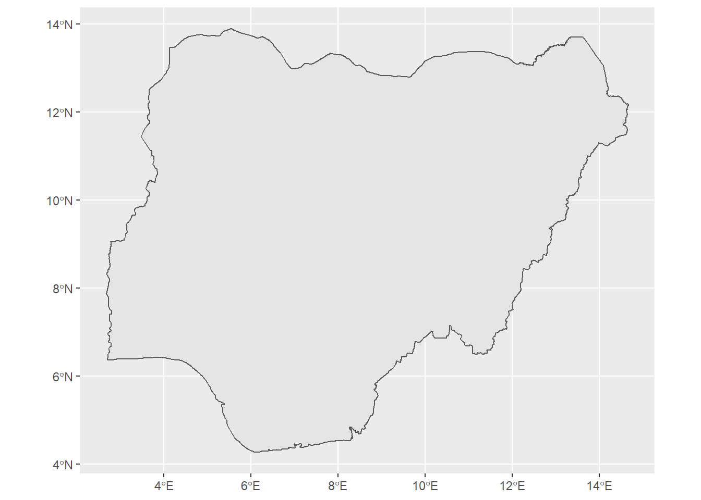
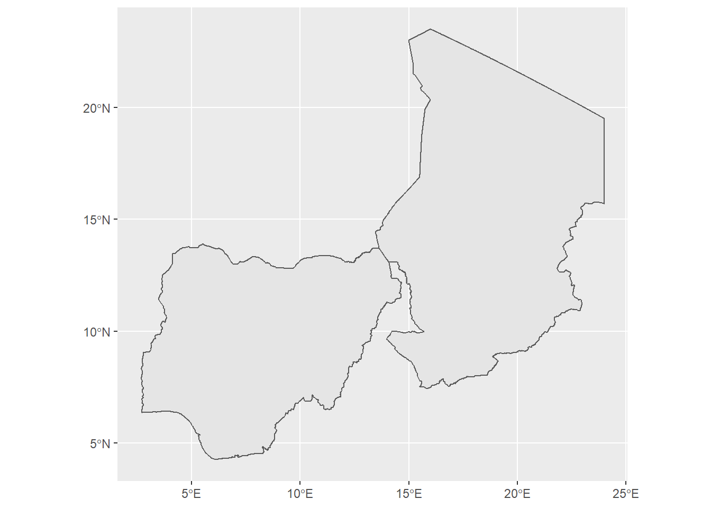
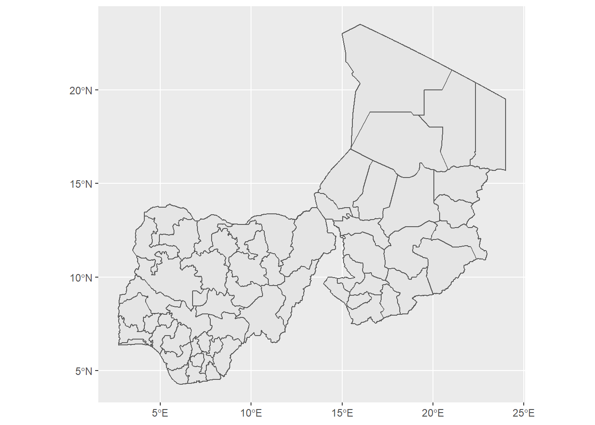
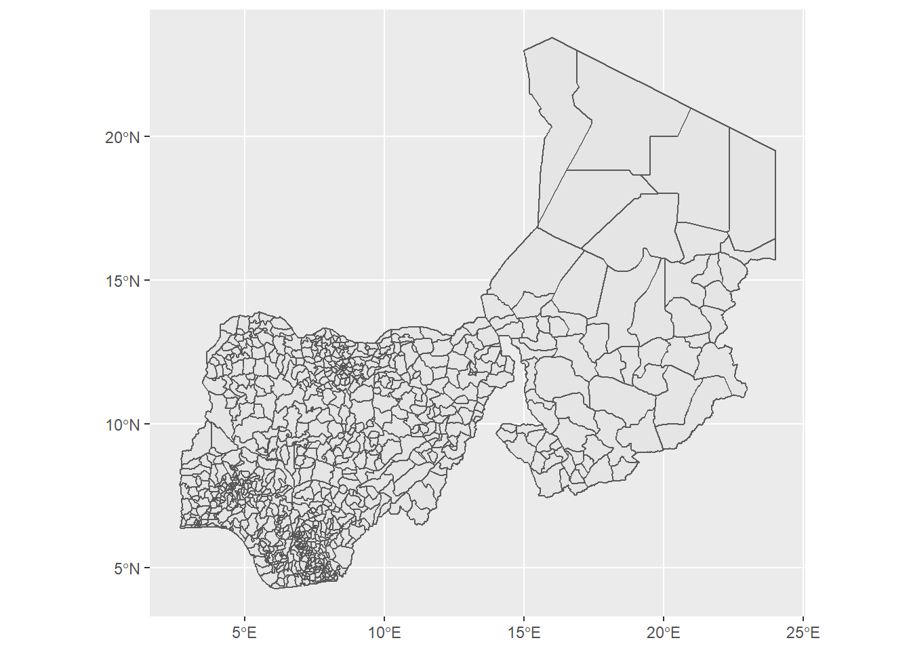
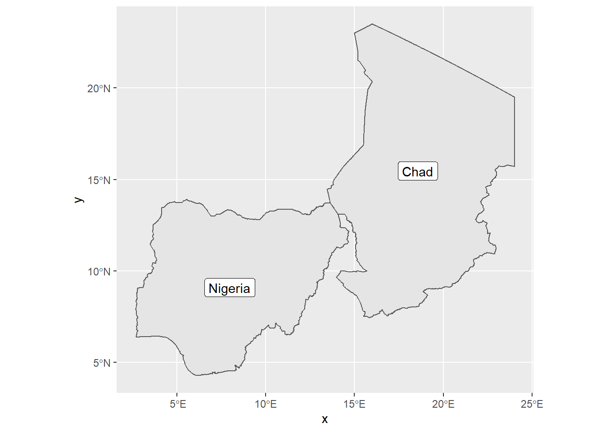
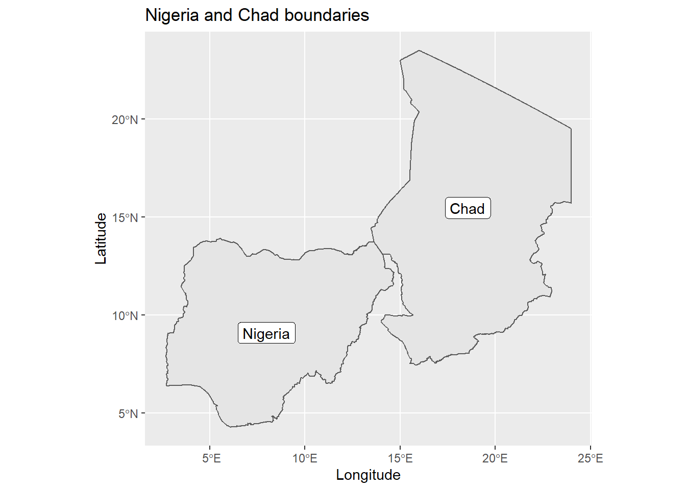
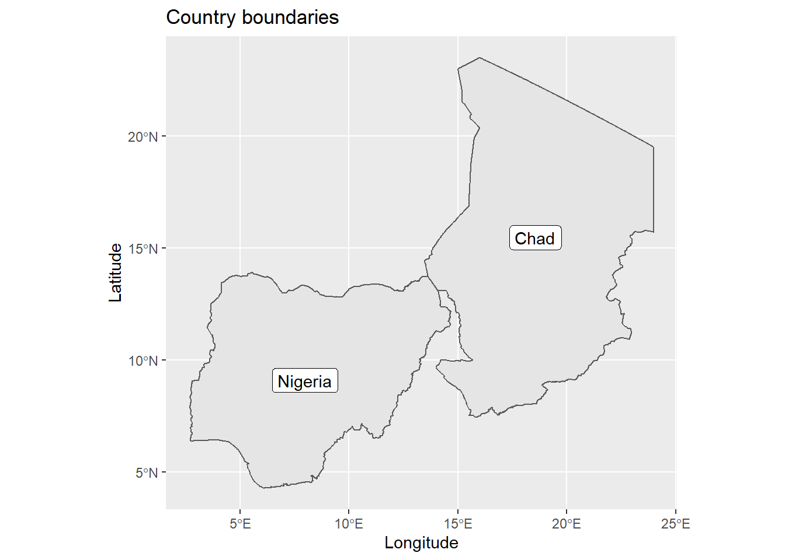
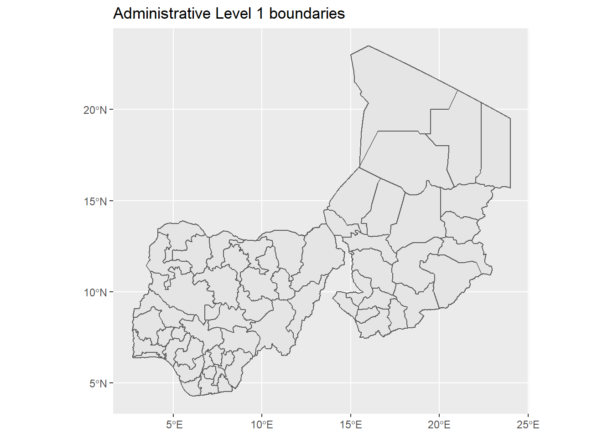
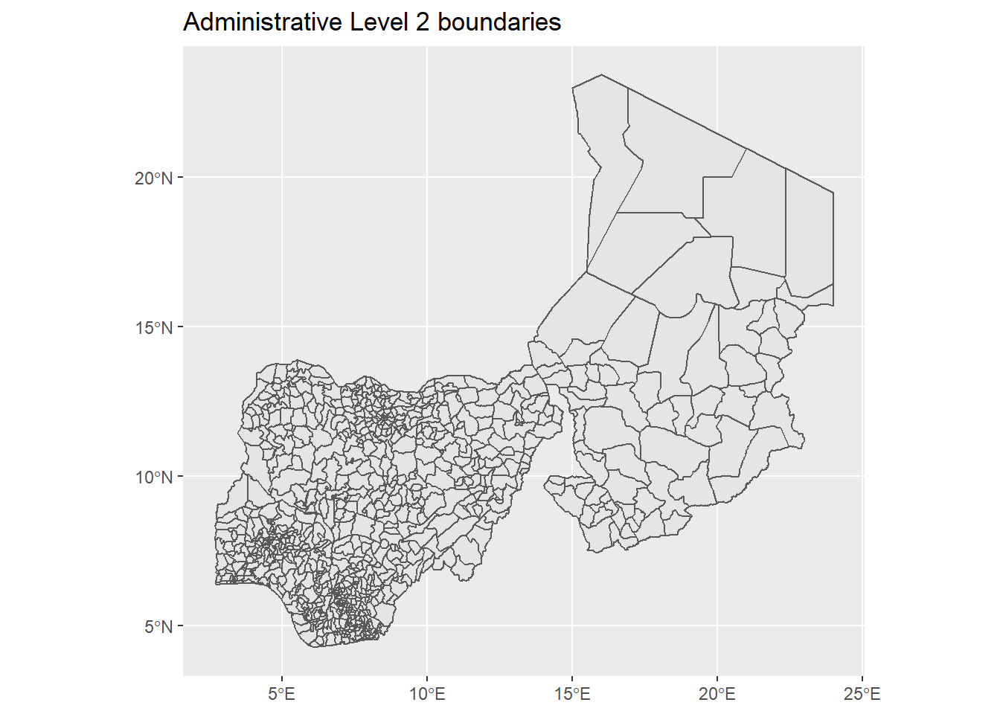

rgeoboundariesThe rgeoboundaries package is a client for the geoBoundaries API, providing country political administrative boundaries. This tutorial takes you through the steps of downloading administrative boundaries of countries using the rgeoboundaries package and visualising them using the ggplot2 package.
rgeoboundariesThe rgeoboundaries package can be downloaded from GitHub using the remotes package which allows easy installation of R packages from remote repositories such as GitHub. We install and load the remotes package and use it to install the rgeoboundaries package from GitHub as follows.
install.packages("remotes")
library(remotes)
remotes::install_github("wmgeolab/rgeoboundaries")To download boundaries of countries we use the geoboundaries() function of rgeoboundaries. For example, we can download the administrative boundary of Nigeria and assign it to a variable called nigeria_boundary as follows.
library(rgeoboundaries)
nigeria_boundary <- geoboundaries("Nigeria")The ggplot2 package can be used to plot the administrative boundaries downloaded. ggplot2 allows us to easily visualise simple feature objects using the geom_sf() function and can be used to plot the administrative boundary of Nigeria as follows.
# install.packages("ggplot2")
library(ggplot2)
ggplot(data = nigeria_boundary) +
geom_sf() 
We can also download the boundaries of multiple countries together by including the names of countries as a vector. See how the boundaries of Nigeria and Chad are downloaded below.
nigeria_chad_boundaries <- geoboundaries(c("Nigeria", "Chad"))ggplot(data = nigeria_chad_boundaries) +
geom_sf()
If available, lower levels of administrative boundaries in countries can be downloaded too. We just have to pass the administrative level as an argument in the geoboundaries() function. Administrative level 1 (“adm1”) is the highest level, while administrative level 5 (“adm5”) is the lowest. This means the country will be further sub-divided into administrative divisions as the Administrative level progresses from 1 to 5. See how the first and second administrative level boundaries of Nigeria and Chad are downloaded below.
#downloading administrative level 1 boundaries
nigeria_chad_admlvl1_boundaries <- geoboundaries(c("Nigeria", "Chad"), "adm1")
ggplot(data = nigeria_chad_admlvl1_boundaries) +
geom_sf()
#downloading administrative level 2 boundaries
nigeria_chad_admlvl2_boundaries <- geoboundaries(c("Nigeria", "Chad"), "adm2")
ggplot(data = nigeria_chad_admlvl2_boundaries) +
geom_sf()
If we print out the downloaded administrative boundary of Nigeria, we will see that the downloaded boundary is a simple feature collection with 1 feature and 5 fields. A feature is thought of as a single object, Nigeria in this case. The fields are thought of as the geometrical attributes included about each feature; shapeName, shapeISO, shapeID, shapeGroup and shapeType in the above object.
nigeria_boundary## Simple feature collection with 1 feature and 5 fields
## geometry type: MULTIPOLYGON
## dimension: XY
## bbox: xmin: 2.668432 ymin: 4.277144 xmax: 14.67808 ymax: 13.90103
## geographic CRS: WGS 84
## shapeName shapeISO shapeID shapeGroup shapeType
## 1 Nigeria NGA NGA-ADM0-1590546715-B1 NGA ADM0
## geometry
## 1 MULTIPOLYGON (((5.746892 4....The simple feature object retrieved with the boundaries of Nigeria and Chad is a simple feature collection with 2 features and 5 fields. The 2 features will refer to the two countries (Nigeria and Chad), and the features will be the geometrical attributes of each feature.
nigeria_chad_boundaries## Simple feature collection with 2 features and 5 fields
## geometry type: GEOMETRY
## dimension: XY
## bbox: xmin: 2.668432 ymin: 4.277144 xmax: 24 ymax: 23.4975
## geographic CRS: WGS 84
## shapeName shapeISO shapeID shapeGroup shapeType
## 1 Nigeria NGA NGA-ADM0-1590546715-B1 NGA ADM0
## 2 Chad TCD TCD-ADM0-1590546715-B1 TCD ADM0
## geometry
## 1 MULTIPOLYGON (((5.746892 4....
## 2 POLYGON ((23.99944 15.79972...Similarly, downloads of administrative level 1 (nigeria_chad_admlvl1_boundaries) and 2 (nigeria_chad_admlvl2_boundaries) boundaries of Nigeria and Chad will result in simple feature objects with 60 and 843 features respectively. Here each feature will be a single administrative division. The number of administrative divisions increasing as the countries are further sub-divided from administrative level 1 divisions to administrative level 2 divisions.
The shapeName field of the simple feature objects has the names of the administrative divisions. We can create a map with the names of the divisions for Nigeria and Chad using the geom_sf_label() function and setting label = shapeName.
ggplot(data = nigeria_chad_boundaries) +
geom_sf() +
geom_sf_label(aes(label = shapeName))
Labelling the administrative divisions also automatically labelled the axes as x and y. If we want to change these axis labels, we can use xlab() and ylab() functions. We can also use the ggtitle() function to add a title to the plot.
ggplot(data = nigeria_chad_boundaries) +
geom_sf() +
geom_sf_label(aes(label = shapeName)) +
xlab("Longitude") +
ylab("Latitude") +
ggtitle("Nigeria and Chad boundaries")
The following code show examples on how to use the rgeoboundaries package to download administrative boundaries and ggplot2 to visualise them.
library(rgeoboundaries)
library(ggplot2)
# Country boundaries of Nigeria and Chad
nigeria_chad_boundaries <- geoboundaries(c("Nigeria", "Chad"))
ggplot(data = nigeria_chad_boundaries) +
geom_sf() +
geom_sf_label(aes(label = shapeName)) +
xlab("Longitude") +
ylab("Latitude") +
ggtitle("Country boundaries")
# Administrative Level 1 boundaries of Nigeria and Chad
nigeria_chad_admlvl1_boundaries <- geoboundaries(c("Nigeria", "Chad"), "adm1")
ggplot(data = nigeria_chad_admlvl1_boundaries) +
geom_sf() +
ggtitle("Administrative Level 1 boundaries")
# Administrative Level 2 boundaries of Nigeria and Chad
nigeria_chad_admlvl2_boundaries <- geoboundaries(c("Nigeria", "Chad"), "adm2")
ggplot(data = nigeria_chad_admlvl2_boundaries) +
geom_sf() +
ggtitle("Administrative Level 2 boundaries")
rgeoboundaries repository: https://github.com/wmgeolab/rgeoboundariesggplot2 package: https://ggplot2.tidyverse.org/